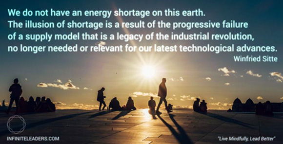

Filter: Vision Inspiration Spiritual Ideate
Who Killed “Time Is Money” – part 4: Dinosaurs in the Sun.
Post by 27 April 2015

In 1980 Sharp launched the first solar-powered commercial device: a calculator. Like most, my imagination went wild as I envisaged a world where our gadgets never ran out of power. The future was promising to be an exciting place.
What happened? We are still plugging our gadgets in.
Instead, the most evident change has been the increased use of re-chargeable batteries, their reduced size, and their capacity to provide a lot more power. But overall our power sources and industry has changed little, and not until the early 2000;s when the increasing smog problems in large cities due to coal-power toxic gas and CO2 pollution did serious investment in solar and other clean energy sources begin to contest the dominance of fossil-fuels in a meaningful way. So far the argument for not burning fossil origin fuels has been centered on the emission problem, and to a lesser degree on the extraordinarily damaging extraction. There is however another strong argument for saving it for more important uses (such as inert recyclable plastics necessary for sterile medical applications), or the use of coal (in far more conservative quantities) for nano-technology, electronics and industrial composite materials which has not yet entered the mainstream awareness.
While the rethoric surrounding energy industries and their importance to economies worldwide drowns out the real issues, the reality is extraordinarily simple.
The earth does not have an energy shortage. The shortage, and the inaccessibility is caused entirely by a legacy supply and business model that emerged with the industrial revolution, and being entirely dependent on that technology, it is obsolete and incapable of evolving along with innovation.
What we lack today is not better technology, but transitional models.
As a result the process is showing up to become deeply disruptive, as new technologies that have developed far enough to become overwhelming better propositions have begun to simply wipe out its predecessors, sidestep their systems and rendering them obsolete.
Besides having a considerable economic advantage (requiring little or no subsidies to be cost competitive) there is also the added benefit of speedy deployment, significantly reduced infrastructure, geographic independence, and a extraordinarily small environmental footprint. While this is often treated as an “externality” and not a factored cost within the industry, the overall economy still carries the burden of such damage in other sectors.
But that is today. What about the future?
First of all, I believe that the future will be primarily based on solar energy. Initially we will see this coupled with batteries, but in the long run we will see new technologies based on natural processes such as photosyntesis, organic substances and bacteria. processes, both for small-scale generation as well as storage. Some of the technologies currently in early stages of development include Sediment Microbial Fuel Cells (based on plants and soil) and a variety of bacteria-based systems that produce electricity while desalinating water or purifying wastewater. While these are currently still only a laboratory reality, it is easy to see the multiple benefits of such systems. Increased interest and investment and the prospect of commercially lucrative developments is certain to lead to some disruptive offering, and at the very least make a meaningful contribution to more specialised sectors of energy production.
Another aspect of solar that is non-visible light. Currently solar panels work predominantly with the visible light spectrum, but that is also changing. One of the side-plots to solar currently being developed in Canada is the use of light colours and electro-magentic radiation that is not visible to our human eyes, such as infra-red, ultraviolet and radio waves, which also hit the earth in abundance at night time. That means that while the output would not be the same as from direct sunlight, devices will still be able to generate some electricity at night.
Add to this photo-voltaic paints, films and flexible membranes. Houses, vehicles, and paved surfaces and gadgets would be painted with light sensitive paints (these already exist), or have surfaces covered with flexible transparent adhesive solar/radiation collecting films.
Combined with hyper-efficient batteries (think 100 x or more the current charge capacity) and wireless induction re-chargers, it is not hard to see that a power-points in your house will become obsolete. Most small devices will be nearly or totally energy-self sufficient. There will be no need to pay energy utilities for infrastructure costs – overland wiring will be obsolete and will at some point result in firms who will dismantle and reclaim tremendous amounts of increasingly scarce and precious copper for re-use elsewhere. No overland and streetside power-lines, and more importantly, an entire risk eliminated from the community: electrocution.
Not only will kids be able to safely fly a kite in the neighbourhood, your footpath trees will grow lush and full canopies. This may sound utopian, but only to those unaware of the critical tipping points being passed by the ongoing transformation of the energy industry world-wide. So far two countries have already achieved a 100% clean energy supply, and the number is only going to increase over the coming years, in particular in those places where there is no or only limited existing infrastructure now, such as large parts of India and Africa.
With a few exceptions (cooking, heating and refrigeration are unavoidably energy-intensive) the high voltage grid is history. The most dangerous electrical thing a child may stick his fingers in will be a usb socket, but even that will be a rarity. Most devices will simply have an induction contact plate for recharging.
Again, it is easy to see the profound disruptive capacity of emerging innovations on just two aspects of our every-day lives. It is hard to accept that this is probable, but the reality is that it is in fact almost inevitable. As these technologies get better, and the increasing cost of externalities and problems associated with an altered climate (due to our modification of the atmosphere’s delicate chemical balance) are drawn from the purses of entire countries’ economies, the impetus for transformation will only increase.
Paid electricity suppliers, and teh entire networks upon which they operate will become a thing of the past.
Why? Because as we inevitably advance towards the de-coupling of income from labour, the provision of energy for the population becomes a necessary investment by governments in order to keep a country operational. On the upside, those costs will be considerably lower than they currently are, primarily because there will be little or no infrastructure build and to maintain.
As mentioned in my previous posts, all the propositions here are based on already known and existing trends and technologies, and because of that it is inherently conservative. To expect less would be naive, and any business that is intending to survive through this period of intense disruption needs to position itself to service a vastly different, but in my opinion much better world.
While I have not directly addressed the elephant in the room – social and economic models – I believe every one of us have a role to play in accelerating these changes rather than resisting them. There will be enough resistance from businesses and industries that are destined to be annihilated in the process, as well as inherently change-averse and conservative public institutions and governments. But there is also a tremendous momentum from the sheer scale, profitability and social good of these emerging opportunities. When these profound transformations are impeded and forced to slow down unnaturally, the greater the cost and damage to economies and individuals becomes, and the risk for social conflict, instability and humanitarian crises increases.
I invite you to imagine with me the day when a vast part of the population can invest their time into passion projects, the wellbeing of others, creative and artistic endeavors and stuff that no-one has imagined yet. A world where poverty is eliminated because nobody needs to work for money, and where healthy, nutritious food, water and basic are abundant and accessible in every corner of the planet. You and I will experience this world. And I look forward to be inspired and amazed by the innovations and inventions of tomorrow as I was as a kid when reading sci-fi novels and looking a books about the future.
Related Stories
Feature Stories
Post by 27 April 2015
6 Comments
Why your experience does not matter and how to make it matter
Post by 27 April 2015
6 Comments
10 Ways to Win Back Your Mind.
Post by 27 April 2015
6 Comments
The fights we do not have to fight.
Post by 27 April 2015
6 Comments
The only thing that actually matters when you are stuck
Post by 27 April 2015
6 Comments
He is questioned by U.S. customs officials, and his scars and gang tattoos, marking him as an assassin, do not go unnoticed.
9 December 2014, at 12:30 p.m.
Replay
They have been friends and business partners from the beginning. Manny would womanize but could never find that right girl until he met Gina Montana.
9 December 2014, at 1:30 p.m.
Replay
Lipsum?
9 December 2014, at 5:30 p.m.
Replay
He is questioned by U.S. customs officials, and his scars and gang tattoos, marking him as an assassin, do not go unnoticed.
10 December 2014, at 8:30 p.m.
Replay
Elvira has German-American heritage. She leaves Montana after a fight at a restaurant, and is mentioned by Sheffield's henchman Pablo to bait Tony into a trap by Sheffield and Sosa.
14 December 2014, at 3:30 p.m.
Replay